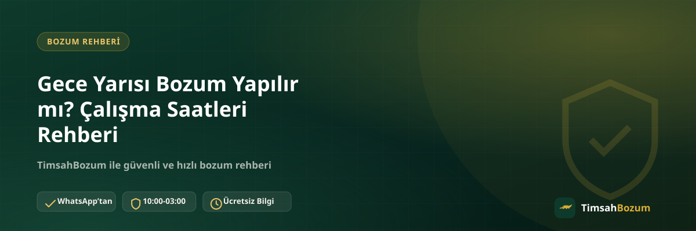

Elinde kullanmadığı bir kod veya bakiye kalan pek çok kişi, bu işlemi ancak gece geç saatte, işten veya günlük işlerden arta kalan vakitte düşünüyor. "Gece yarısı bozum yapılır mı" sorusu da böyle ortaya çıkıyor. Bu yazıda TimsahBozum'un çalışma saatlerini, mesai dışında gönderilen bir mesaja ne olduğunu ve gece vakti işlem başlatmak isteyenlerin bilmesi gereken pratik noktaları anlatıyoruz.
TimsahBozum'un Çalışma Saatleri Nedir?
TimsahBozum, her gün 10:00 ile 03:00 arası aktif çalışıyor. Bu saat aralığı, sabah erken bir işlem başlatmak isteyenden gece geç saatte elindeki kodu veya bakiyeyi değerlendirmek isteyen herkesi kapsayacak şekilde geniş tutuluyor. Gece yarısı da bu aralığın içinde kaldığı için, saat 00:00 civarında yazan biri normal mesai saatlerindeki gibi işlem başlatabilir.
Gece Yarısı Bozum Yapılır mı?
Evet. Çalışma saatleri gece 03:00'e kadar sürdüğü için gece yarısı bir kod paylaşmak veya bakiye bilgini göndermek tamamen mümkün. Süreç gündüz saatlerinde olduğu gibi işler: bilgini paylaşırsın, güncel oranı teyit edersin, onay verdikten sonra ödemen WhatsApp üzerinden görüşülen yöntemle yapılır.
Çalışma Saatleri Dışında Gönderilen Mesaja Ne Olur?
03:00 ile 10:00 arasında, yani hattın kapalı olduğu dönemde bir mesaj gönderirsen bu mesaj kaybolmaz. Hat tekrar açıldığında sırasıyla yanıtlanır. Yani sabaha karşı 04:00'te yazdığın bir mesaj, saat 10:00'da hat açıldığında değerlendirilmeye başlar; sen ayrıca bir şey yapmana gerek kalmaz.
Gece İşlem Yapmak Güvenilir mi?
Süreç açısından gece ile gündüz arasında hiçbir fark yok. Kod tabanlı bir hizmet (Razer Gold, iTunes) bozduruyorsan kodun kendisini, bakiye tabanlı bir hizmet (Pokus, Paycell, mobil ödeme) bozduruyorsan güncel bakiyeni gösteren bir ekran görüntüsünü paylaşman yeterli. Bilgi resmi WhatsApp hattımız (+90 543 887 21 71) dışında hiçbir yere gitmiyor, dolayısıyla gece geç saatte işlem yapmanın ek bir risk taşıdığını düşünmene gerek yok. Detaylı hizmet bilgisine mobil bozum sayfamızdan ulaşabilirsin.
Sabaha Karşı Yanıt Almazsam Ne Yapmalıyım?
Çalışma saatleri dışında gönderdiğin bir mesaja hemen yanıt gelmemesi normal, çünkü hat henüz açılmamış olabilir. Aynı mesajı art arda birkaç kez göndermek sırayı öne almaz, sadece konuşmayı karmaşıklaştırır. En pratik yaklaşım, mesajını bir kez gönderip hattın açılmasını beklemek; 10:00 itibarıyla mesajlar sırayla yanıtlanmaya başlar.
Gece Vakti Birden Fazla İşlemi Aynı Anda Bildirebilir miyim?
Evet. Gece geç saatte yazıyorsan ve elinde birden fazla kod veya bakiye varsa bunların hepsini tek mesajda toplu şekilde belirtmen süreci hızlandırır. Örneğin hem bir Paycell bakiyen hem de kullanmadığın bir Razer Gold kodun varsa, ikisini de aynı mesajda paylaşman, ayrı ayrı gönderip aralıklarla beklemekten daha pratik sonuç verir.
Erken Sabah Saatinde (10:00) Yazmak Gece Yazmaktan Daha mı Hızlı Sonuçlanır?
Hattın yeni açıldığı 10:00 civarı ile gece geç saatte, örneğin 01:00'de yazmak arasında sürecin işleyişi açısından bir fark yok; ikisinde de bilgi paylaşımı, oran teyidi ve onay adımları aynı sırayla ilerler. Tek pratik fark, gece geç saatte yazan birinin mesajının hat açıkken hemen değerlendirilmesi, çalışma saatleri kapandıktan sonra (03:00-10:00 arası) yazan birinin ise mesajının hat açılana kadar sırada beklemesi.
Hafta Sonu Çalışma Saatleri Değişir mi?
Hayır. TimsahBozum'un 10:00-03:00 çalışma saatleri hafta içi ve hafta sonu dahil her gün aynı şekilde geçerli. Cumartesi veya pazar günü gece geç saatte yazan biri de, hafta içi bir gece yazan biriyle tamamen aynı süreçten geçer; ayrı bir tatil veya hafta sonu mesai düzeni uygulanmıyor.
Gece Vakti Bilgimi Yalnızca WhatsApp'tan mı Paylaşmalıyım?
Evet. Saat ne olursa olsun, kod veya bakiye bilgin sadece resmi WhatsApp hattımız (+90 543 887 21 71) üzerinden paylaşılır. Gece geç saatte "hızlı sonuç" vaat ederek farklı bir numaradan veya Instagram gibi başka bir platformdan ulaşıldığını düşünüyorsan, bilgi paylaşmadan önce bu numaradan doğrudan teyit almalısın. Gece vakti acele etme hissi, resmi hat dışı taleplere karşı temkini azaltmamalı.
Mesai Saatleri Neden 24 Saat Değil?
Bozum işlemi, bir botun otomatik onay verdiği bir süreç değil; oran teyidi ve bilgi kontrolü gerçek kişiler tarafından yapılıyor. Bu yüzden hattın belirli saatlerde açık olması, işlemlerin dikkatli ve doğru şekilde ilerlemesini sağlıyor. 10:00-03:00 aralığı, günün büyük bölümünü kapsayarak hem sabah hem gece geç saatte yazan kullanıcıların işlemini başlatabilmesine imkân tanıyor.
Gece Vakti İşlem İçin Ne Hazırlamalısın?
Gece geç saatte yazacaksan, mesajını göndermeden önce hangi hizmeti bozduracağına karar vermen ve ilgili bilgiyi (kod ya da bakiye ekran görüntüsü) hazırda bulundurman süreci hızlandırır. Böylece hat açıldığında karşındaki, senden tekrar bilgi istemek zorunda kalmaz ve işlem ilk sıradan itibaren ilerler. Eksik veya bulanık bir ekran görüntüsü paylaşmak, gece de gündüz de aynı şekilde gecikmeye yol açar. Bu hazırlığı gece saatlerinde yapmak, özellikle çalışma saatlerinin kapanmasına az kala yazanlar için önemli; mesajını 03:00'e çok yakın bir saatte, eksik bilgiyle göndermek yerine, elindeki bilgiyi tamamlayıp öyle göndermen işlemin bir sonraki güne kalmasını önler.
Gece Yarısı Oran Teyidi Nasıl İşler?
Oran teyidi, günün her saatinde aynı şekilde çalışır: sitede yayınlanan oran genel bir referanstır, işlem anındaki güncel oran WhatsApp üzerinden teyit edilerek ilerler. Gece geç saatte de bu teyit adımı atlanmaz; hattın açılmasını bekleyip oranı gördükten sonra işlemi onaylayabilir ya da vazgeçebilirsin. Güncel oranları ve süreci mobil ödeme bozdurma sayfamızdan da inceleyebilirsin.
İlgili Yazılar
- Bozum İşlemi Ne Zaman Tamamlanır, Süreç Nasıl İşler?
- Bozum İşlemi Yaparken Nelere Dikkat Etmeli
- Bozum Yaparken WhatsApp Dışında Bir Platform Güvenilir mi?
Gece geç saatte elindeki kodu veya bakiyeyi değerlendirmek istiyorsan WhatsApp hattımıza yazarak işlemini başlatabilirsin.